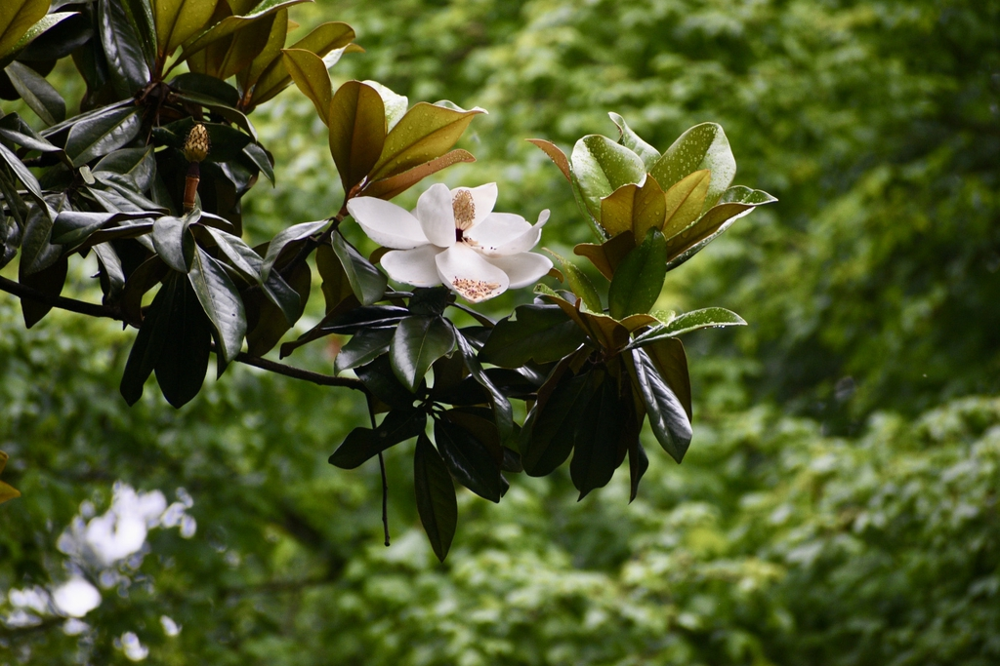

Magnolia: Plant Detection
and Quantification
Detect and count Magnolia plants in overhead nursery images. Inspect bounding boxes, measure box coverage, and download the results. Images are processed on your device.
Interactive demo
YOLO11n · ONNX RuntimeResult
No imageSelect an image to begin
Upload your own overhead photograph,
or use the example image.
Method and evaluation
Detection and measurement
YOLO11n was fine-tuned on overhead nursery images with a bounding box around each annotated Magnolia plant. The browser runs the ONNX model, filters weaker predictions using a fixed cutoff, and removes overlapping duplicate boxes. The count is the number of retained boxes. Box coverage measures the fraction of image area they enclose, counting overlaps once.
Validation and scope
The cutoff was selected on validation images. On a separate test split, predicted counts and box locations were compared with the supplied annotations to assess counting error and localization. These splits cover recovered image regions from one nursery acquisition. Performance at other sites has yet to be measured.
Plant reference

An evergreen ornamental tree native to the southeastern United States.
Botanical details and photo credit
Family: Magnoliaceae. Native from North Carolina to Florida and west to Texas. Compact cultivars can be grown as shrubs or small trees.
The photo illustrates Southern magnolia. The detector identifies plants at the Magnolia genus level.
Sources: NC State Extension and Oregon State. Photo: Cathy DeWitt, CC BY 4.0.